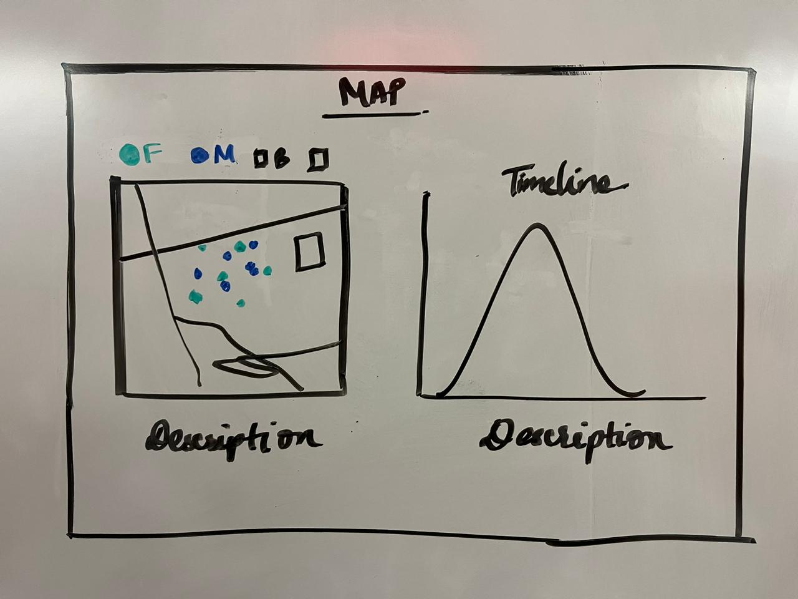
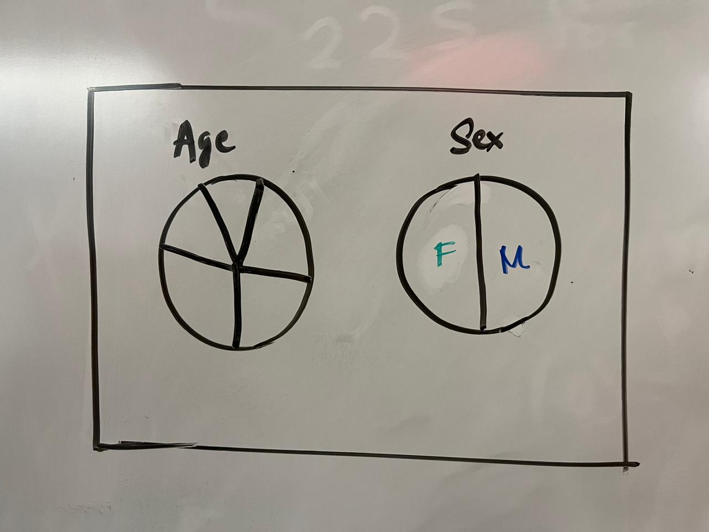

Dr. John Snow's map is a visual representation of cholera epidemic from the 19th century, this outbreak caused large-scale transmission of the disease. John Snow discovered Cholera disease when he investigated a spread in the Soho district of London. Theory believed that the disease was transmitted or spread by bad air, John snow was the one who knew that cholera was transmitted throught the contaminated water. In 1854 the physician made a huge contribution in fighting cholera and was able to demonstrate how the contaminated public water pump was causing cholera in that region. He made great contributions which led to some positive changes as the water pumps used for drinking were disables, decrease in the number of deaths.
I was excited to recreate Dr. John Snow's cholera map visualization. The very first step in visualization is analyzing the given data, I went through the data files to check and understand the type of data columns, JSON file which describes the paths for the map. I started by working on the map using JSON file where I successfully created the map lines for the paths from the given data.
By referring to websites and reading the D3 book I understood the concepts of creating the different types of graphs such as the line chart, bar graphs and the pie charts.
Cholera Epidemic map of london was recreated by importing the csv data file and json file to first draw the street lines of the map. After creating the street lines I focused on naming streets and positioning the work-house circle, brewery and the pumps into the map.
Implemented the visual encoding hovering on the timeline graph, we can see the number of deaths occurred on the particular dates on the map.
I started by designing and thinking about how can I display the soho map and the graphs required. I drew some UI designs by hand to get an overview about how will I be able to fit the maps and the graphs on the screen without a need to scroll down the page. By importing the dataset and starting to map the street lines of it, I tried to align the map on the left corner of the page so that other graphs would fit besides it. Implementing the map exactly the way it should look was a task and I had to keep debugging the code many a times to make it look good and interpret the results properly.
 The Map gives us an overview about how the females are affected more as compared to the ratio of males. It also gives the description about the persons affected by cholera and a specific region around the broad street is highly infected by it.